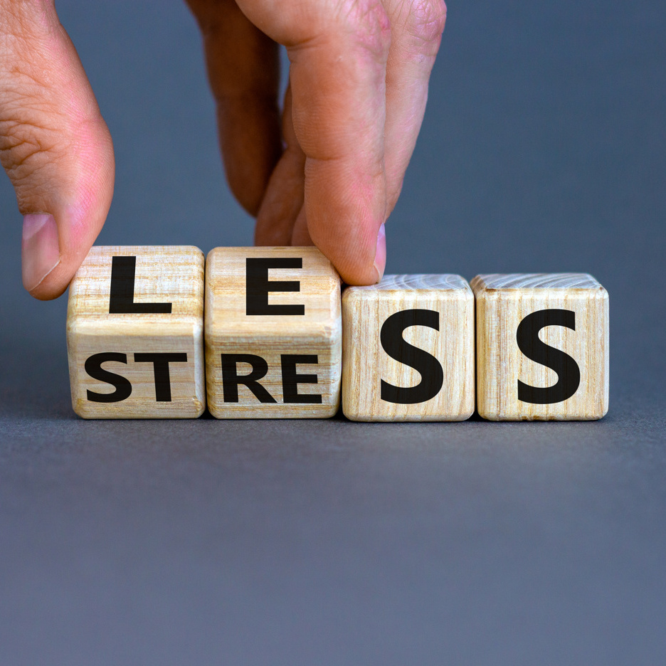

Pour qui ?
Cette approche s’adresse à toute personne souhaitant :
Mieux comprendre et gérer ses émotions

Diminuer son stress

La psychopraticienne spécialisée en naturopathie accompagne les personnes dans une démarche globale de mieux-être. Son rôle est d'aider chacun à mieux comprendre et gérer ses émotions, ses comportements et ses pensées tout en prenant en compte les aspects physiques, psychologiques et environnementaux de leur vie.
La psychopraticienne intervient sur les dimensions psychologiques de l'individu. Elle utilise des approches thérapeutiques comme l'écoute active, les exercices de relaxation, ou encore les techniques de gestion des émotions. Elle ne remplace pas un psychologue ou un psychiatre mais offre un accompagnement complémentaire, centré sur le développement personnel et la résolution de blocages émotionnels.
La naturopathie est une approche de santé naturelle qui vise à maintenir ou restaurer l’équilibre du corps. Elle repose sur trois piliers fondamentaux : l’alimentation saine, l’activité physique adaptée, et la gestion du stress. Elle peut inclure des techniques comme la phytothérapie, les huiles essentielles, ou encore des conseils pour adopter un mode de vie équilibré.
Les deux pratiques peuvent être indépendantes ou conjointes.
Je vous explique üòâ
L'intégration de la naturopathie dans une consultation de psychopraticien peut, à mon sens, être très bénéfique pour l’accompagnement d'une personne qui prend en compte ses aspects physiques, émotionnels et psychiques.
Cela complète bien le travail d'un psychopraticien qui vise également à comprendre la personne dans sa globalité.
Le travail autour de votre bien-être psychique et émotionnel peut s’accompagner d’une observation des différents plans suivants qui peuvent favoriser un retour à l’équilibre :
Une alimentation équilibrée et adaptée peut avoir un impact significatif sur la santé mentale.
L'utilisation de certaines plantes médicinales peut aider à gérer l'anxiété, le stress ou la dépression.
Les techniques de Relaxation qui peuvent permettre d’anticiper et/ou de réduire le stress de la vie,…
En conclusion, l'utilisation de la naturopathie dans une consultation de psychopraticien peut enrichir l'accompagnement proposé, en offrant des solutions naturelles et en favorisant une meilleure qualité de vie.
Cette approche s’adresse à toute personne souhaitant :